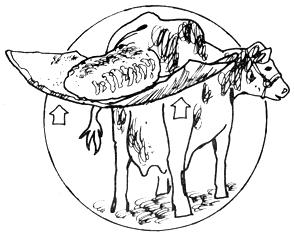

Treatment consists of supporting the uterus on a large towel, cleaning the organ as well as possible, lubricating it well and gradually inverting and replacing the mass through the vulva. Care must be taken not to puncture the tissue nor damage its surface.